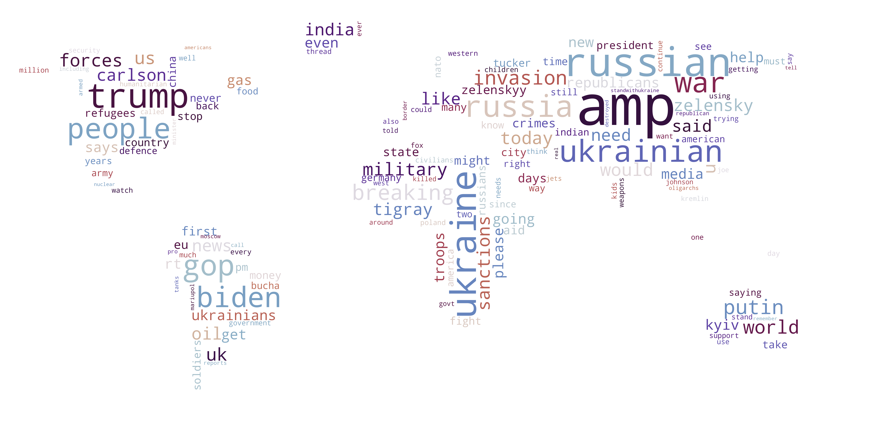

write something about when the time periods are and stuff like that - write conclusion - what can we see when comparing all the wordclouds? is there anything interesting?
https://almafaz.github.io/index.html#hero
https://github.com/almafaz/almafaz.github.io
Group members: Simone von Mehren (s190739), Natasha Norsker (s194270) and Alma Fazlagic (s194271)
All group members contributed equally, but the main contributers on the sub-sections were:
In this project we worked with a huge dataset of tweets discussing the on-going war between Ukraine and Russia. The dataset building the foundation for this project was originally retrieved from the Github repo of ehsanulhaq1/russo_ukraine_dataset and consists of tweet ids for all tweets containing certain key words relevant to the war in the period from 21st February 2022 to 15th April 2022. Using the tweet ids, we were able to download the corresponding tweets from Twitter as well as a number of attributes including the user name, language, date of creation, etc. Twitter is used by 229 million users daily (www.aljazeera.com) and is thereby an extensive source, if one wants insights about the public opinion of some matter. The original dataset collected by ehsanulhaq consists of 3 million+ tweets distributed over 54 days and we subsampled one million tweets for the analysis and data visualisations in this project.
The Russian invasion of Ukraine has shook many countries and has severely affected economies, families and political relationships across the world. As an effect of Russia's endless war crimes, threat to Ukraine's independence and strained relationship to NATO, many countries have imposed sanctions on Russia resulting in price increases and a massive decrease in delivery of gas from Russia to the world. More importantly, more than 14.000 Ukranians have lost their lives and many more has become refugees in Europe.
All of these reasons makes it interesting and highly relevant to analyse the public opinion and discourse towards Russia and the war in general - and Twitter is a great source to access this. We want to investigate whether there has been any change in the discourse and sentiment towards Ukraine and Russia during the period of the war, and whether there are any differences in the political and public opinion from one country to another.
Furthermore, we will investigate the nature of how users interact in Ukrainian and Russian by doing a network analysis, where we look at both clustering trends and community detection.
In terms of our goal for the end users' experiences, we wanted to create an interactive webpage which invited the users to dig in to the investigation themselves. Overall we wanted to present an overview of what people are saying about the war on Twitter, which main subjects are discussed and who people interact with within their spoken language.
We aimed at presenting our findings in an user-friendly and comprehensible way using a variety of data visualisations and interactive network graphs. The webpage was designed to put emphasis on the time/language aspects of the analysis making it easy for the user to understand our results and focus on one area at a time. The interactive parts of the webpage invites the user to engage in the analysis themselves and furthermore it was our hope that these features would make the experience fun and more appealing to the user.
The following sections of code include everything used for data preprocessing and cleaning. Due to the high memory usage and heavy computations, everything has been run on the hpc and is simply displayed here for documentation purposes.
The original dataset include tweet ids retrieved from Twitter using the Twitter streaming Api and include tweets from each day in the period 21-02-2022 to 15-04-2022. The dataset is available at the github repo: ehsanulhaq1/russo_ukraine_dataset, where the authors are also listed.
The tweet ids have been collected based on a range of keywords relevant to the war such as (russia, ukraine, putin, zelensky, russian, ukrainian, keiv, kyiv). However, the list of keywords were continuously updated by the authors during the period of the data collection, as more and more keywords became relevant for the crisis during the times of download. For access to the complete list of keywords, we refer to the original github (see link above). We reached out to the owner of the GitHub with the purpose of retrieving the specific keywords he used. Unfortunately he was not able to get back to us before the hand-in of the assignment. The Twitter streaming API tracked the requested key words and provided any tweet that contained any of the key words.
The first snippet of code seen below has been used to download the tweet ids from the original github repo. To make sure we had a uniform distribution of data during the whole period, we extracted 18.000 randomly chosen tweet ids from the github repo for each day. This yielded a dataset of approximately 1 million tweets (even though the original dataset included 3 million+ tweets). The reduction of the size of the dataset was a necessity in this project, as it would have been infeasible for us to use the entire original dataset due to heavy computations and high memory usage.
We are, however, aware of the fact that our final dataset is only a subset of the original dataset and therefore only represents a subset of the discussion of the war on twitter. In order to cross section our subset of data to be as representative as possible of the full dataset, we extract the tweet ids for each day randomly (i.e. randomized on tweet upload time), as we already mentioned briefly earlier. Other factors contribute to this limitation as well. For example the key words used when collecting the tweet ids from Twitter controls which tweets are included and excluded from dataset. It is, however, obvious that many tweets within the subject of the Ukraine-Russian war will not include these keywords and therefore we must be aware of this limitation when making any conclusions based on our dataset.
import numpy as np
import random
import pandas as pd
import tweepy as tw
import nltk
from nltk.corpus import stopwords
from nltk.stem import PorterStemmer
from nltk import word_tokenize
import re
import glob
import os
feb = ['2022-02-'+str(date) +'/2022-02-'+str(date) +"_" for date in range(21,29)]
march = ['2022-03-'+str(date).zfill(2) +'/2022-03-'+str(date).zfill(2) +"_" for date in range(1,32)]
april = ['2022-04-'+str(date).zfill(2) +'/2022-04-'+str(date).zfill(2) +"_" for date in range(1,16)]
datedate = feb + march + april
num_csv_pr_day = [22, 20, 48, 72, 72, 72, 78, 79, 7, 5, 6, 6, 5, 6, 5, 6, 5, 6, 6, 6, 5, 6, 5, 6, 5, 5, 6, 5, 6, 5, 5, 6, 5, 6, 5, 6, 6, 5, 6, 5, 5, 6, 5, 6, 5, 6, 5, 5, 6, 5, 6, 5, 6, 5]
ids = []
for i in range(len(datedate)):
date_ids = []
num_csv_picks = int(np.floor(num_csv_pr_day[i]/3))
csv_picks = random.sample(range(1,num_csv_pr_day[i]), num_csv_picks)
tweets_per_csv = int(np.floor(18000/num_csv_picks))
for j in csv_picks:
git_url = 'https://raw.githubusercontent.com/ehsanulhaq1/russo_ukraine_dataset/main/'+ datedate[i] + str(j) + '.csv'
df = pd.read_csv(git_url, header=0)
ids_temp = [item for sublist in list(df.values) for item in sublist][:tweets_per_csv]
ids.append(ids_temp)
ids = [item for sublist in ids for item in sublist]
ids_df = pd.DataFrame(ids)
ids_df.to_csv("ALL_IDS.csv")
After retrieving the tweet ids, we use the Twitter Api v2 to collect the corresponding tweets from Twitter and saved them all in a .csv-file.
Our dataset consists of 18.000 tweets distributed over 54 days, and the dataset include tweets from 651.363 users in total. As the majority of the users do not allow tracking of geolocation, we were not able to save the countries/locations of the users and tweets as first intended. Instead we tracked the language used in each tweet and in total we found 32 languages.
We saved the following 8 attributes for each tweet:
The full text and hashtags were saved to be used in our text and discourse analysis later on. We used the creation date and written language of the tweet to filter the tweets on time and language, respectively, when performing the text and network analysis, and the tweet id and parent author were used to generate several social network graphs during the analysis.
consumer_key= 'insert consumer key here'
consumer_secret= 'insert consumer secret key here'
access_token= 'insert access token here'
access_token_secret= 'insert access token secret here'
auth = tw.OAuthHandler(consumer_key, consumer_secret)
auth.set_access_token(access_token, access_token_secret)
api = tw.API(auth, wait_on_rate_limit=True)
ALL_IDS = pd.read_csv("ALL_IDS.csv")
ALL_IDS = ALL_IDS.iloc[: , 1:]
ALL_IDS.columns = ["ids"]
ALL_IDS.drop(ALL_IDS.tail(25).index,inplace=True)
#create pandas dataframe
#create pandas dataframe
tweets_df = pd.DataFrame(columns = ['text','tweet_type','tweet_id', 'username','parent_author',
'created_utc', 'location','language', 'place'])
n=100
step_size = 100
#BIG LOOP
for i in range(0, len(ALL_IDS), step_size):
batch = [item for sublist in list(ALL_IDS.values[i:n]) for item in sublist]
n+=100
# fetching the statuses from the API
statuses = api.lookup_statuses(batch,tweet_mode="extended")
#retrieve all tweet attributes
for status in statuses:
tweet_id = status.id
username = status.user.screen_name
if hasattr(status, "retweeted_status"):
text = status.retweeted_status.full_text
parent_author = status.retweeted_status.user.screen_name
tweet_type = "retweet"
else:
text = status.full_text
parent_author = status.in_reply_to_screen_name
if parent_author != None:
tweet_type = "reply"
else:
tweet_type = "original"
created = status.created_at
location = status.user.location
language = status.lang
place = status.place
#gather tweet attributes
tweet_attribitues = [text, tweet_type, tweet_id,username, parent_author, created, location, language,place]
# Append to dataframe
tweets_df.loc[len(tweets_df)] = tweet_attribitues
if (len(tweets_df) % 25000 == 0):
tweets_df.to_csv("{}_tester_data.csv".format(i))
tweets_df = pd.DataFrame(columns = ['text','tweet_type','tweet_id', 'username','parent_author',
'created_utc', 'location','language', 'place'])
# concatenating all .csv-files in one
path = r'data_collection/'
all_files = glob.glob(os.path.join(path, "*.csv"))
df_from_each_file = (pd.read_csv(f, engine='python') for f in all_files)
concatenated_df = pd.concat(df_from_each_file, ignore_index=True)
concatenated_df.to_csv("ALL_DIRTY_TWEETS.csv")
After extracting all tweets, we performed multiple steps of data cleaning before using the data for analysis. The following major steps were performed on all tweets in our data cleaning-process:
The code used for this process can be seen below.
from deep_translator import GoogleTranslator
nltk.download('stopwords')
nltk.download('punkt')
stopword_vocab = stopwords.words('english')
ps = PorterStemmer()
# the following functions can be applied to a df with pandas apply function
# translate text to english
def translate_text(text, source='auto', target='en'):
lang_dict = {'afrikaans': 'af', 'albanian': 'sq', 'amharic': 'am', 'arabic': 'ar', 'armenian': 'hy', 'azerbaijani': 'az', 'basque': 'eu', 'belarusian': 'be', 'bengali': 'bn', 'bosnian': 'bs', 'bulgarian': 'bg', 'catalan': 'ca', 'cebuano': 'ceb', 'chichewa': 'ny', 'chinese (simplified)': 'zh-CN', 'chinese (traditional)': 'zh-TW', 'corsican': 'co', 'croatian': 'hr', 'czech': 'cs', 'danish': 'da', 'dutch': 'nl', 'english': 'en', 'esperanto': 'eo', 'estonian': 'et', 'filipino': 'tl', 'finnish': 'fi', 'french': 'fr', 'frisian': 'fy', 'galician': 'gl', 'georgian': 'ka', 'german': 'de', 'greek': 'el', 'gujarati': 'gu', 'haitian creole': 'ht', 'hausa': 'ha', 'hawaiian': 'haw', 'hebrew': 'iw', 'hindi': 'hi', 'hmong': 'hmn', 'hungarian': 'hu', 'icelandic': 'is', 'igbo': 'ig', 'indonesian': 'id', 'irish': 'ga', 'italian': 'it', 'japanese': 'ja', 'javanese': 'jw', 'kannada': 'kn', 'kazakh': 'kk', 'khmer': 'km', 'kinyarwanda': 'rw', 'korean': 'ko', 'kurdish': 'ku', 'kyrgyz': 'ky', 'lao': 'lo', 'latin': 'la', 'latvian': 'lv', 'lithuanian': 'lt', 'luxembourgish': 'lb', 'macedonian': 'mk', 'malagasy': 'mg', 'malay': 'ms', 'malayalam': 'ml', 'maltese': 'mt', 'maori': 'mi', 'marathi': 'mr', 'mongolian': 'mn', 'myanmar': 'my', 'nepali': 'ne', 'norwegian': 'no', 'odia': 'or', 'pashto': 'ps', 'persian': 'fa', 'polish': 'pl', 'portuguese': 'pt', 'punjabi': 'pa', 'romanian': 'ro', 'russian': 'ru', 'samoan': 'sm', 'scots gaelic': 'gd', 'serbian': 'sr', 'sesotho': 'st', 'shona': 'sn', 'sindhi': 'sd', 'sinhala': 'si', 'slovak': 'sk', 'slovenian': 'sl', 'somali': 'so', 'spanish': 'es', 'sundanese': 'su', 'swahili': 'sw', 'swedish': 'sv', 'tajik': 'tg', 'tamil': 'ta', 'tatar': 'tt', 'telugu': 'te', 'thai': 'th', 'turkish': 'tr', 'turkmen': 'tk', 'ukrainian': 'uk', 'urdu': 'ur', 'uyghur': 'ug', 'uzbek': 'uz', 'vietnamese': 'vi', 'welsh': 'cy', 'xhosa': 'xh', 'yiddish': 'yi', 'yoruba': 'yo', 'zulu': 'zu'}
if source not in lang_dict.values():
return 'und'
else:
return GoogleTranslator(source=source, target=target).translate(text)
# lowercase all letters in text
def lowercase(txt):
return txt.lower()
# removes emojis, links, special characters, hashtags
def remove_links_special_characters(txt):
return ' '.join(re.sub("(@[A-Za-z0-9]+)|([^0-9A-Za-z \t])|(\w+:\/\/\S+)", " ", txt).split())
# find all hashtags - might not be necessary if it is properly in data
def find_hashtags(text):
found_hashtags = re.findall(r'#\w+', text)
return [tick[1:].capitalize() for tick in found_hashtags]
# tokenize the tweets + remove stopwords
def tokenize_text(text, stem=True):
if stem:
filtered = [ps.stem(w.lower()) for w in word_tokenize(text)
if w.isalpha() and w.lower() not in stopword_vocab]
else:
filtered = [w.lower() for w in word_tokenize(text)
if w.isalpha() and w.lower() not in stopword_vocab]
return filtered
def clean_tweet(tweet, language):
clean_tw = str(tweet)
# finds the hashtags (need to be done in og language)
try:
hashtags = find_hashtags(clean_tw)
except:
hashtags = []
# lowercase - before or after hashtag?
clean_tw = lowercase(clean_tw)
# translate only if the language is not english
if language != ('en'):
clean_tw = translate_text(text=clean_tw, source=language, target='en')
#translate hashtags
try:
hashtags = [translate_text(tag, language) for tag in hashtags]
except:
hashtags = []
# clean up in text (remove links, special characters etc.)
clean_tw = remove_links_special_characters(clean_tw)
tokenized = tokenize_text(clean_tw, stem=False)
tokenized_stemmed = tokenize_text(clean_tw, stem=True)
return (clean_tw, hashtags, tokenized, tokenized_stemmed)
all_dirty_tweets_df = pd.read_csv('ALL_DIRTY_TWEETS.csv')
clean_results = all_dirty_tweets_df.apply(lambda x: clean_tweet(x['text'], x['language']), axis=1)
all_dirty_tweets_df[['translated_text','translated_hashtags','tokenized_text','tokenized_text_stemmed']] = pd.DataFrame(clean_results.tolist(), columns=['translated_text', 'translated_hashtags', 'tokenized_text', 'tokenized_text_stemmed'])
all_dirty_tweets_df.to_csv('ALL_TWEETS_CLEAN.csv')
We created a plot over the volume of tweets per day for the english, ukranian and russian language respectively. This was done to get an overview of the volume for the different languages we were analysing. The actual volume graph was created in HTML, but the data for the graph was extracted in python and the extraction code can be seen below.
import datetime as dt
from datetime import datetime, timedelta
import pandas as pd
import numpy as np
#reading data:
data_df = pd.read_csv("/work/data/ALL_CLEAN_TWEETS.csv",converters={'tokenized_text': eval,'tokenized_text_stemmed': eval,"translated_hashtags": eval })
# make timestamp to a datetime object
data_df["date_created"] = pd.to_datetime(data_df['created_utc'], errors='coerce').dt.normalize()
data_df["date"] = data_df["date_created"].dt.date
data_df["translated_text"] = data_df["translated_text"].astype(str)
# run the following cells for 'ru', 'en' and 'uk'
volume_df = data_df.loc[data_df.language=='ru']['date_created'].dt.date.value_counts().sort_index().reset_index()
#to list so we can put it directly into the html chart.js code
[date_obj.strftime('%Y-%m-%d') for date_obj in volume_df['index']]
#to list so we can put it directly into the html chart.js code
volume_df.date_created.tolist()
It is easy to see that the volume of tweets written in english far succeeds the tweets written in ukranian and russian respectively. This is only expected as the english language has an overall higher volume of people speaking it. However, this leads to english hashtag trends and keywords possibly dominating in the analysis where we are not splitting by language.
import pandas as pd
import matplotlib.pyplot as plt
import seaborn as sns
#reading data:
data_df = pd.read_csv("/work/data/ALL_CLEAN_TWEETS.csv",converters={'tokenized_text': eval,'tokenized_text_stemmed': eval,"translated_hashtags": eval })
# make timestamp to a datetime object
data_df["date_created"] = pd.to_datetime(data_df['created_utc'], errors='coerce').dt.normalize()
data_df["date"] = data_df["date_created"].dt.date
data_df["translated_text"] = data_df["translated_text"].astype(str)
# we need the date, language and the text to do the dispersion plot
lexical_df = data_df.loc[data_df.language.isin(['en', 'ru', 'uk'])][['date', 'language', 'translated_text']].sort_index().reset_index()
lexical_df['translated_text'] = lexical_df['translated_text']
# we create our list of important wors
words = "belarus|loot|glory|vasylkiv|oil|economy|chernobyl| nuclear war"
# we find all the important words in the tweets
lexical_df['words'] = lexical_df.translated_text.apply(lambda x: re.findall(words, x))
# we explode the dataframe to have single important words per row
lexical_df = lexical_df.explode('words')
lexical_df = lexical_df[lexical_df['words'].notna()]
lexical_df.head()
# plotting the dispersion plot
plt.figure(figsize=(22,12))
plot = sns.stripplot(x="date", y="words", data=lexical_df, size=8, marker="s", edgecolor="gray", hue="language")
plt.xticks(rotation = 'vertical')
plt.legend(loc = 2, bbox_to_anchor = (1,1))
plt.savefig('dispersion.png')
plt.show()
Our initial intention with the dispersion plot was to use it to locate events or trends in time regarding the war. However, after numerous trials with different words we had to conclude that the dispersion plot does not show significant differences between the magnitude of usage of words.
We do, however, see a few interesting tendencies in the dispersion plot above. First of all, the use of the Ukranian city name "Vasylkiv" peaks around the 25th-28th February 2022, then again around 12th March 2022 and lastly in the period of 1st-4th April 2022. These dates (/periods in time) corresponds to the dates of the initial and second attack on the city and the declaration of liberation from Russian invaders, respectively (www.theguardian.com).
Furthermore the word "glory" was used mostly by the Russians around February 28th 2022, which was a few days after the first attacks in the Russian invasion of Ukraine and this may be imply that the Russians were rather optimistic at this point in time. The word "economy" was used significantly more by the Russians than the other languages on March 8th 2022 which is appriximately a week after the West started to impose economical sanctions on Russia(ns). It can also be seen that the expression "nuclear war" seemed to be used more by the Russians around April 1st. We did not find any particular big events regarding this on the exact date but the debate of whether a nuclear war was a significant threat did rise during April 2022 so there may be some connection here.
how they were made
import pandas as pd
from collections import Counter
import shifterator as sh
from datetime import datetime, timedelta
#reading data:
data_df = pd.read_csv("/work/data/ALL_CLEAN_TWEETS.csv",converters={'tokenized_text': eval,'tokenized_text_stemmed': eval,"translated_hashtags": eval })
# make timestamp to a datetime object
data_df["date_created"] = pd.to_datetime(data_df['created_utc'], errors='coerce').dt.normalize()
data_df["date"] = data_df["date_created"].dt.date
data_df["translated_text"] = data_df["translated_text"].astype(str)
#making different dataframes for ukranian tweets and russian tweets
lang_ru = data_df.loc[data_df.language=='ru']
lang_uk = data_df.loc[data_df.language=='uk']
#explode the tokenized text columns to only contain single strings instead of lists
l_ru = lang_ru.tokenized_text.explode().to_list()
l_uk = lang_uk.tokenized_text.explode().to_list()
p_ru = dict([(key, value/len(l_ru)) for key,value in Counter(l_ru).items()])
p_uk = dict([(key, value/len(l_uk)) for key,value in Counter(l_uk).items()])
all_tokens = set(p_ru.keys()).union(set(p_uk.keys()))
dp = dict([(token,p_ru.get(token,0) - p_uk.get(token,0)) for token in all_tokens])
sorted(dp.items(),key= lambda x:x[1], reverse=True)[:10]
h = dict([(token,lab_dict.get(token,np.nan)-5) for token in all_tokens])
dPhi = dict([(token, h[token] * dp[token]) for token in all_tokens if not np.isnan(h[token])])
sorted(dPhi.items(),key= lambda x:np.abs(x[1]), reverse=True)[:11]
sentiment_shift = sh.WeightedAvgShift(type2freq_1 = p_ru,
type2freq_2 = p_uk,
type2score_1 = lab_dict,
reference_value =5)
sentiment_shift.get_shift_graph(detailed=True,
system_names = ["Russian","Ukranian"])
plt.show()
To clarify what can be seen in the plot, the light colors represent the words that have been less frequently used in ukranian tweets than in russian tweets and the dark colors respresent words that are more frequently used in ukranian than in russian.
Yellow indicates positive words, while blue indicates negative words.
As can be seen by the light yellow color, the word 'russia' is not as commonly used by tweets written in ukranian, than they are in russian tweets. It can also be seen that it is counted as a positive word. Since the intention of the tweet is not necessarily for 'russia' to be positive, this might skew the overall result of the wordshift so that the overall ukranian tweets are counted more negatively than they perhaps should have been.
To fix this issue, we would either have to have some contextual information and assign 'russia' and 'russian' our own sentiment score depending on the context or we would have to remove the word completely. Both of these seemed to be subpar solutions, since the decrease in the use of 'russia' and 'russian' is still a valuable insight and creating a context specific sentiment score for only the words 'russian' and 'russia' would make the wordshift unnecessarily complicated.
It can be seen that ukrainian tweets more often include the word 'glory'. Ukrain has a war slogan 'Slava Ukraini' which translates to 'Glory to Ukraine' in english. 'win','victory' and 'enemy' is also more frequently used by ukrainian tweets.
Russian tweets more often use the negative words 'bomb', 'operation', 'killed', 'attacked' than ukrainian tweets do. They also more often use the positive words like 'russia', 'russian', 'like', 'special', where, as previously stated the 'russia' and 'russian' is slightly more ambiguous in terms of what the sentiment score should be.
Overall ukrainian tweets have a higher sentiment score than russian tweets, although the shift in sentiment score is not large.
# this allows you to pull the scores from the shift graph (because we made ours in html)
print(sentiment_shift.get_shift_scores()['world']*100)
print(sentiment_shift.get_shift_component_sums())
# min date range is the first 14 days of the war
min_date_range = pd.date_range(data_df.date.sort_index()[0], periods=14).date
# min date range is the last 14 days of the data
max_date_range = pd.date_range(data_df.date.sort_index().iloc[-1], periods=14).date
min_date_df = data_df.loc[data_df.date.isin(min_date_range)]
max_date_df = data_df.loc[data_df.date.isin(max_date_range)]
#explode text columns to only have a single word per row instead of list
l_bef = min_date_df.tokenized_text.explode().to_list()
l_aft = max_date_df.tokenized_text.explode().to_list()
p_bef = dict([(key, value/len(l_bef)) for key,value in Counter(l_bef).items()])
p_aft = dict([(key, value/len(l_aft)) for key,value in Counter(l_aft).items()])
all_tokens = set(p_bef.keys()).union(set(p_aft.keys()))
dp = dict([(token,p_bef.get(token,0) - p_aft.get(token,0)) for token in all_tokens])
sorted(dp.items(),key= lambda x:x[1], reverse=True)[:10]
h = dict([(token,lab_dict.get(token,np.nan)-5) for token in all_tokens])
dPhi = dict([(token, h[token] * dp[token]) for token in all_tokens if not np.isnan(h[token])])
sorted(dPhi.items(),key= lambda x:np.abs(x[1]), reverse=True)[:11]
sentiment_shift = sh.WeightedAvgShift(type2freq_1 = p_bef,
type2freq_2 = p_aft,
type2score_1 = lab_dict,
reference_value =5)
sentiment_shift.get_shift_graph(detailed=True,
system_names = ["First Two Weeks","Last Two Weeks"])
plt.savefig('wordshift_time.png')
plt.show()
To clarify what can be seen in the plot, the light colors represent the words that have been less frequently used in the last two weeks than in the first two weeks and the dark colors respresent words that are more frequently used in the last two weeks than in the first two weeks.
Yellow indicates positive words, while blue indicates negative words.
As can be seen by the light blue color, the words 'crimes', 'rape' and 'raped' was more frequently used in the first two weeks. However, the words 'stop', 'refugees', 'nuclear' and 'hospital' are more frequently used now. This might be because there is a larger amount of refugees now than there was in the first two weeks of the war and the topic of nuclear war and nuclear explosions are more prevalent now ever since the attack near Chernobyl.
The word 'plant' is more frequently used now, but it is not easy to determine if this is referring to crops or nuclear power plants without more context.
There is a slightly higher overall sentiment in these previous two weeks of data than in the first two weeks. However, this difference is very slight - only 0.01 shift in sentiment score.
# this allows you to pull the scores from the shift graph (because we made ours in html)
print(sentiment_shift.get_shift_scores()['crimes']*100)
print(sentiment_shift.get_shift_component_sums())
We constructed several word clouds filtered on time and language, respectively, in order to display and highlight relevant words in debate on Twitter. The word clouds were generated based on TF-IDF scores in order to highlight, not simply the most frequent used words, but the most relevant words for the specific language or time period.
The term frequency (TF) is computed using the following formular: $$ \large \mathrm{TF}=\frac{\text { count of } \mathrm{t} \text { in } \mathrm{d}}{\text { total number of words in } \mathrm{d}} $$ where t is the term and d denotes the document.
The IDF formula is as follows: $$ \large \mathrm{IDF}=\log \left(\frac{\mathrm{N}}{\mathrm{df}+1}\right) $$ where N is the total number of documents, df is the document frequency (number of documents in which term t occurs) and 1 is the shrink term.
Usually it is smart to add a shrink term to the denominator (+1 for example) to avoid division by zero.
However, in our case we are certain that all terms is present at least once in one of the documents and therefore we can omit the shrink term (which in return ensures no negative IDF values). Our final IDF formula used in the assignment is therefore the following:
$$ \large \mathrm{IDF}=\log \left(\frac{\mathrm{N}}{\mathrm{df}}\right) $$Three word clouds were constructed filtered on language; English, Ukranian and Russian. In the same way, three word clouds were constructed filtered on time in the periods; 21st Feb 2022 - 10th March 2022, 11th March 2022 - 29th March 2022 and 30th March 2022 - 15th April 2022.
In the sections below, the code used for wordcloud generation can be seen. It should be noted that a random subsample of 50.000 data points were used to generate the wordclouds, as it was infeasible in terms of computation time to use all of the 1 million data points. This does of course mean that the corpus only represents a subset of 5% of the original which will most likely have an effect on the IDF scores especially. However, we assume that this is still a representative cross section of the data for the purpose of this specific part of the analysis.
# load all data
clean_text = pd.read_csv("/work/data/ALL_CLEAN_TWEETS.csv",converters={'tokenized_text': eval,'tokenized_text_stemmed': eval,"translated_hashtags": eval }, low_memory=False)
# subsample 50.000 data points randomly
clean_text = clean_text.sample(n=50000, random_state=1)
all_lang = ['en', 'pt', 'ru', 'ja', 'es', 'ca', 'de', 'fr', 'th', 'fi', 'uk',
'et', 'it', 'tr', 'und', 'pl', 'zh', 'nl', 'cs', 'ro', 'no', 'hi',
'el', 'ht', 'fa', 'in', 'tl', 'ta', 'da', 'ar', 'sv', 'sr', 'sl',
'lv']
# function to create large documents of all words within one category (language or time period)
def large_document(lang):
lang_list = clean_text.loc[clean_text['language'] == lang].tokenized_text.tolist()
lang_list = list(itertools.chain(*lang_list))
return lang_list
# function to compute TF scores
def computeTF(doc):
TF_dict = dict([(key, round(value/len(doc),6)) for key,value in Counter(doc).items()])
return TF_dict
# create large documents for all 32 languages
for lang in all_lang:
globals() [f'{lang}_doc'] = large_document(lang)
all_docs = [en_doc, pt_doc, ru_doc, ja_doc, es_doc, ca_doc, de_doc, fr_doc, th_doc, fi_doc, uk_doc,
et_doc, it_doc, tr_doc, und_doc, pl_doc, zh_doc, nl_doc, cs_doc, ro_doc, no_doc, hi_doc,
el_doc, ht_doc, fa_doc, in_doc, tl_doc, ta_doc, da_doc, ar_doc, sv_doc, sr_doc, sl_doc,
lv_doc]
# compute TFs for all large documents
for doc, lang in zip(all_docs, all_lang):
globals() [f'{lang}_TF'] = computeTF(doc)
all_TF = [en_TF, pt_TF, ru_TF, ja_TF, es_TF, ca_TF, de_TF, fr_TF, th_TF, fi_TF, uk_TF,
et_TF, it_TF, tr_TF, und_TF, pl_TF, zh_TF, nl_TF, cs_TF, ro_TF, no_TF, hi_TF,
el_TF, ht_TF, fa_TF, in_TF, tl_TF, ta_TF, da_TF, ar_TF, sv_TF, sr_TF, sl_TF,
lv_TF]
# Create corpora including the 32 large documents
corpora = {}
for lang in range(len(all_docs)):
corpora[lang] = all_docs[lang]
corpora_list = []
for i in range(len(corpora)):
corpora_list.append(corpora[i])
corpora_set = set([term for sublist in corpora_list for term in sublist])
# compute IDF scores for all words in corpus
IDFs = {}
N = len(corpora)
for term in tqdm(corpora_set):
# compute document frequency for each term:
counter = 0
for i in range(len(corpora)):
if term in set(corpora[i]):
counter += 1
# Compute IDF for term
#print(term)
IDFs[term] = np.log(N / counter)
# Create function for computing TF-IDF values
def computeTF_IDF(TF_dict, IDF_dict):
tfidf_dict_lang = {}
for key, val in TF_dict.items():
tf = val
idf = IDF_dict[key]
tfidf_dict_lang[key] = round(tf*idf, 6)
return tfidf_dict_lang
# compute TF-IDF scores for all languages
for lang, tf in zip(all_lang, all_TF):
globals() [f'{lang}_tf_idf'] = computeTF_IDF(tf, IDFs)
# function for generating wordcloud
def generate_wordcloud(data, mask=None):
cloud = WordCloud(scale=4,
max_words=150,
colormap='twilight',
mask=mask,
background_color='white',
).generate_from_frequencies(data)
return cloud
# English wordcloud
en_mask = np.array(Image.open('masks/world_mask.png'))
wordcloud_en = generate_wordcloud(en_tf_idf, mask=en_mask)
wordcloud_en.to_file("english_wc.png")

# Russian wordcloud
ru_mask = np.array(Image.open('masks/ru_mask.png'))
wordcloud_ru = generate_wordcloud(ru_tf_idf, mask=ru_mask)
wordcloud_ru.to_file("russian_wc.png")
# Ukranian wordcloud
uk_mask = np.array(Image.open('masks/ukr_mask.png'))
wordcloud_uk = generate_wordcloud(uk_tf_idf, mask=uk_mask)
wordcloud_uk.to_file("ukranian_wc.png")
Looking at the English wordcloud we can get a sense of what words/subjects are discussed in general all over the world, as English is the language most often used to communicate between different nationalities. Some of the most prominent words are "russia(n)", "ukraine(ian)", "zelensky", "putin", "biden" and "trump", which are all very general in terms of the war. In other words the presence of these words could indicate that the political situation and factual development of the war is what is discussed the most across nationalities. This seems sensible as this is the ways in which most countries are affected by the war and therefore this is probably what is interesting to most people worldwide. Other words which represent more specific subjects include "gas", "oligarchs", "nato", "oil", "fight", "support" and "kyiv". This is most likely representing the consequences of the western sanctions towards Russia which have caused a shortage of gas and oil supply as well as price increases. Also it is highly debated to what extend NATO should help Ukraine and the presence of this word could indicate that people are expressing their opinion about this matter online. Lastly words like "please", "fight" and "kyiv" are included in the wordcloud. We cannot conclude anything regarding who is fighting for/supporting who based on these stand-alone words. However, the presence of the word "kyiv" indicates that a majority of the users expressing themselves in English are supporting Ukraine, as the choice of spelling Kyiv in the Ukrainian way has become a symbol of supporting the country during the war.
Looking at the Russian wordcloud, many of the words from the English wordclouds such as "ukraine(ian)", "russia(n)", "zelensky" and "putin" recur in here. However, some distinct words are present as well. These include "terrorist", "operation", "oppression", "belarus", "access", "sanctions" and many more. Once again it is hard to say anything certain about the dicourse and opinions towards these subjects based on single words but we can infer that subjects such as the development in the invasion of Ukraine and the effects of the sanctions towards their country are some of the focuses of the Russians.
One of the most distinctive and informative wordclouds in terms of sentiment and discourse are the Ukrainian. Here we see (probably) hashtags such as "stoprussia" and "standwithukraine" which of course expresses sympathy with their country. Words such as "children" and "feminism" may refer to the war crimes committed by Russia such as killing civilians (including targetting schools and kinder gardens) and rape of the women, and words like "freedom", "please" and "world" may symbolise the Ukranians' cry and hope for help from the rest of the world. It should be emphaised that this is just suggestions and we cannot conclude anything confidently about the meanings behind the wordclouds based entirely on singe words.
clean_text_test = clean_text.copy()
clean_text_test['date_created'] = pd.to_datetime(clean_text_test['created_utc']).dt.normalize()
clean_text_test = clean_text_test.sort_values(by="date_created")
#dataframe including first time period
start_date1 = pd.to_datetime('2022-02-21 00:00:00+0000')
end_date1 = pd.to_datetime('2022-03-10 00:00:00+0000')
mask1 = (clean_text_test['date_created'] >= start_date1) & (clean_text_test['date_created'] <= end_date1)
clean_text1 = clean_text_test.loc[mask1]
#dataframe including second time period
start_date2 = pd.to_datetime('2022-03-11 00:00:00+0000')
end_date2 = pd.to_datetime('2022-03-29 00:00:00+0000')
mask2 = (clean_text_test['date_created'] >= start_date2) & (clean_text_test['date_created'] <= end_date2)
clean_text2 = clean_text_test.loc[mask2]
#dataframe including third time period
start_date3 = pd.to_datetime('2022-03-30 00:00:00+0000')
end_date3 = pd.to_datetime('2022-04-15 00:00:00+0000')
mask3 = (clean_text_test['date_created'] >= start_date3) & (clean_text_test['date_created'] <= end_date3)
clean_text3 = clean_text_test.loc[mask3]
# create large doc for all dates
time_large_doc1 = clean_text1.tokenized_text.tolist()
time_large_doc1 = list(itertools.chain(*time_large_doc1))
time_large_doc2 = clean_text2.tokenized_text.tolist()
time_large_doc2 = list(itertools.chain(*time_large_doc2))
time_large_doc3 = clean_text3.tokenized_text.tolist()
time_large_doc3 = list(itertools.chain(*time_large_doc3))
all_docs_time = [time_large_doc1, time_large_doc2, time_large_doc3]
# compute TF
time_tf1 = computeTF(time_large_doc1)
time_tf2 = computeTF(time_large_doc2)
time_tf3 = computeTF(time_large_doc3)
# Create corpora including the 32 large documents
corpora_time = {}
for period in range(3):
corpora_time[period] = all_docs_time[period]
corpora_list_time = []
for i in range(len(corpora_time)):
corpora_list_time.append(corpora_time[i])
corpora_set_time = set([term for sublist in corpora_list_time for term in sublist])
IDFs_time = {}
N = len(corpora_time)
for term in tqdm(corpora_set_time):
# compute document frequency for each term:
counter = 0
for i in range(len(corpora_time)):
if term in set(corpora_time[i]):
counter += 1
# Compute IDF for term
IDFs_time[term] = np.log(N / counter)
tf_idf1 = computeTF_IDF(time_tf1, IDFs_time)
tf_idf2 = computeTF_IDF(time_tf2, IDFs_time)
tf_idf3 = computeTF_IDF(time_tf3, IDFs_time)
# 21/2 - 10/3 wordcloud
wordcloud_period1 = generate_wordcloud(tf_idf1)
wordcloud_period1.to_file("21_02_to_10_03_wc.png")

# 11/3 - 29/3 wordcloud
wordcloud_period2 = generate_wordcloud(tf_idf2)
wordcloud_period2.to_file("11_03_to_29_03_wc.png")

# 30/3 - 15/4 wordcloud
wordcloud_period3 = generate_wordcloud(tf_idf3)
wordcloud_period3.to_file("30_03_to_15_04_wc.png")

Looking at the wordclouds based on relevant words for different time periods, we hoped to see a change of discourse and/or subject as time proceeded. Looking at the first period of the war spanning from the Russian Invasion of Ukraine until March 10th, we see that some of the most prominent words are "williamson", "edinburgh" and "absolutist". The first refer to Hugh Williamson, the Europe and Central Asia director at Human Rights Watch, who in the first days of the war expressed deep concerns towards Russia's act of war crimes (www.hrw.org) and the term "edinburgh" may be rated as relevant because Ukranians joined in huge demonstrations in Scotland against the attacks on their homelands during the first days of the war (www.bbc.com). "Absolutist" can refer to different specific cases or simply the meaning of the term itself. One specific case which was trending on March 7th was when Elon Musk refused to block Russian news sources, which resulted in many people accusing him of being a "free speech absolutist" (www.economictimes.indiatimes.com).
Turning our attention towards the second wordcloud from March 11th to March 29th, the some of the largest displayed words are "birzamanlar", "ibrahimcelikkol", "zulhak", "russianassettracker" (probably a hashtag) and "schwarzenegger". When investigating these words, we found that some words seemed more related to the war than others. For example "birzamanlar" and "ibrahimcelikkol" is a Turkish expression and actor, respectively, which do not have any obvious connection to the war. On the other hand the expression "russian-asset-tracker" is the name of a global investigation into assets held outside Russia linked to individuals sanctioned for supporting the government of Russia (www.theguardian.com) which were kicked off on April 8th 2022. Furthermore Arnold Schwarznegger held a speech on March 18th, where he publicly asked Putin to stop the war (www.bbc.com).
In the last wordcloud representing the period from March 30th until April 15th, it is very obvious to see that the focus of many tweets regarding the war is the rapid increase in war crimes performed by Russia. Words like burcha-massacre, rape and acid is in focus which most likely refers to killings and rapes in Bucha during the weeks of April (www.kyivindependent.com) as well as the public suspense of whether Russia has used chemical weapons in Ukraine (www.19fortyfive.com).
All in all the wordclouds based on TF-IDF scores gives insights into the historical and political developments during the war, and more specifically the TF-IDF scores seems to catch the more specific stories and trends rather than the overall most frequently used words.
import pandas as pd
# we need the date and hashtags
hashtag_df = data_df[['date', 'translated_hashtags']]
# remove tweets without hashtags
hashtag_df = hashtag_df[hashtag_df.translated_hashtags.astype(bool)]
hashtag_df.head(3)
# we explode the dataframe to have single important words per row - this is because we want to find most frequently used hashtags
hashtag_df = hashtag_df.explode('translated_hashtags')
hashtag_value_counts = hashtag_df.translated_hashtags.value_counts()[:500]
top_k_hashtags = list(hashtag_value_counts.index)
counts = list(hashtag_value_counts)
# remove undefined and y from hashtag list
top_k_hashtags = set(top_k_hashtags)-set(['und', 'y'])
# only use top k hashtags
hashtag_df = hashtag_df.loc[hashtag_df.translated_hashtags.isin(top_k_hashtags)]
# we explode the dataframe to have single important words per row
hashtag_df = hashtag_df.explode('translated_hashtags')
# group by date and hashtags and count how many per hashtag per day
hashtag_df = hashtag_df.groupby(['date', 'translated_hashtags']).size().unstack(fill_value=0)
hashtag_df.reset_index()
hashtag_df = hashtag_df.reset_index()
# melt the dataframe to only countain columns ['date', 'name', 'category', 'value'] (needed for js)
hashtag_df = hashtag_df.melt(id_vars=["date"], var_name="name", value_name="value")
hashtag_df['category'] = 'hashtag'
hashtag_df = hashtag_df[['date', 'name', 'category', 'value']]
hashtag_df = hashtag_df.set_index('date')
hashtag_df.to_csv('data_hashtags.csv')
hashtag_df
# now save as csv file and copy over the data to file in d3js folder
The bar chart is originally an animation displayed on our webpage but it was only possible to illustrate a still-image here (due to the implementation in HTML). We therefore refer to our webpage to see the live animation.
Looking at the bar chart from day to day, we see a general persistent trend in hashtags such as Ukraine and Russia. Furthermore many hashtags expressing sympathy with Ukraine is trending throughout the period. Examples of these are "StandWithUkraine" and "StopRussia".
One of the very interesting things we find when studying the development in hashtag-trends is that different Ukranian city names are trending around the same day as their were attacked by Russia. This means that the bar chart provides us with a rather precise timeline of the attacks of Ukrainian cities. On the 24/02/2022 we see that "Kyiv" is trending which corresponds to the day that Russia initiated attacks on the Kyiv Oblast (www.edition.cnn.com). The same applies on 02/03/2022 where Kharkiv was trending and the Russian army captured Kharkiv (www.nytimes.com), Mariupol on 10/03/2022, where the city was bombed (www.theguardian.com) and lastly "Bucha" and "Buchamassacre" on 04/04/2022 and the following days. Bucha was visited on 04/04 by Ukranian president Zelensky after the killings, rapings and torturement of many Ukranian civilians.
All in all it seems that the majority, if not all, of the top trending hashtags on Twitter regarding the war expresses sympathy with Ukraine in this time of war. It is therefore probable that the majority of Twitter users sympathises with Ukraine. Still it cannot be excluded that some nations may use other social media platforms than Twitter and therefore we cannot conclude that the majority of social media users in general supports Ukraine.
In the social network aspect part of this assignment, we will investigate Twitter network graphs based on the language of users and parent authors in Ukrainian and Russian. We will first examine to which degree users cluster together and how the network clusters compares to a null model. Then we will look even further into these clusters and investigate how communities in the graphs are formed and how strong they are - for this we will use modularity as measure as well as comparing the graphs with configuration models.
Due to computational limitations, an in-depth analysis of the English Twitter network is not possible. If we were to use the whole dataset to create the English betwork, we would have around 500.000 nodes which is infeasible to work with. For the Ukrainian and Russian networks, all data points are used - there is 3.562 and 10.339 data points respectively for the two groups. We tried sampling the English tweets (40.000 tweets), but decided that rather than drawing conlusions based on an analysis of a subset instead of the whole dataset, we would focus our attention on the two other language based networks.
import matplotlib.cm as cm
import matplotlib as mpl
import networkx as nx
import netwulf as nw
from netwulf import visualize
from pyvis.network import Network
import community.community_louvain
from itertools import combinations
# loading all clean tweets
all_tweets = pd.read_csv("/work/data/ALL_CLEAN_TWEETS.csv",converters={'tokenized_text': eval,'tokenized_text_stemmed': eval,"translated_hashtags": eval }, low_memory=False)
Unlike the GME graph, we will not build an reciprocal undirected graph from the weighted edgelists - this is because in the data collected, only tweets containing the keywords specified earlier are fetched, which limits us to get all replies to a single tweet. Furthermore, the Twitter API does not allow us to get all replies since this requires a Premium account. This means that there will not be connections that appear in both directions. This is something we should have considered in the beginning as limitation, but since a big part of Twitter is retweeting rather than actually replying (which would never result in connections in both directions), building non-reciprocal graphs may still be a good representation of the network.
# get both directed and undirected versions of the network graphs
def create_nx_graph(language,w_edgelist):
G = nx.DiGraph()
for index, value in w_edgelist.items():
G.add_weighted_edges_from([(index[0],index[1],value)])
H = G.to_undirected(reciprocal=False)
H.remove_edges_from(list(nx.selfloop_edges(H)))
H.remove_nodes_from(list(nx.isolates(H)))
return G,H
def create_w_edgelist(df, language):
w_edgelist = df.loc[df["language"]==language].groupby(["username", "parent_author"]).size()
return w_edgelist
# creating network graphs based on the Ukrainian and Russian discourse:
w_edgelist_uk = create_w_edgelist(all_tweets, "uk")
G_uk, H_uk = create_nx_graph("uk", w_edgelist_uk)
w_edgelist_ru = create_w_edgelist(all_tweets,"ru")
G_ru, H_ru = create_nx_graph("ru", w_edgelist_ru)
This gives us the following three undirected networks:
Ukrainian Twitter Network:
Russian Twitter Network:
Now we will create Random Networks as null models to investigate some properties of the Twitter Networks.
We will create random networks based on the R(N, p) model introduced by Edgar Nelson Gilbert: Each pair of N labeled nodes is connected with probability p. Computing N and p from the network we are investigating is done by the following:
The formula for the for the expected number of edges in the random network is (given in section 3.3 of the Network Science book ): $$ \langle L\rangle=\sum_{L=0}^{\frac{N(N-1)}{2}} L p_{L}=p \frac{N(N-1)}{2} $$
Setting $\langle L\rangle$ equal to the actual number of edges in the given network, the probabily p can be found by: $$ p = \frac{\langle L\rangle}{\frac{N(N-1)}{2}} $$
# using the formula above, the random network function is created:
def create_random_network(H):
L_edges = len(H.edges())
N_nodes = len(H.nodes())
p = L_edges/(N_nodes * (N_nodes-1)/2)
R = nx.Graph()
all_edge_combinations = list(combinations(range(N_nodes), 2))
for edge in all_edge_combinations:
if random.random() < p:
R.add_edge(*edge)
return R
R_uk = create_random_network(H_uk)
R_ru = create_random_network(H_ru)
This gives us the following Random Networks:
Random Ukrainian Twitter Network:
Random Russian Twitter Network:
Using the random networks, we can investigate the clustering trends within the Ukrainian and Russian Twitter networks. Computing the local clustering coefficient of a particular node allows us to capture the relationship between the neighbors of that node and relates then to the density of the neighboorhood - the more densely connected neighboorhood surrounding the mode, the higher is the coefficient. The local clustering coefficient is given section 2.10 of the Network Science book and is defined as:
$$ C_{i}=\frac{2 L_{i}}{k_{i}\left(k_{i}-1\right)} $$where $L_i$ is the number of links between the $k_i$ neighbors of node $i$.
We can then use this formula to compute the average clustering coefficient of the whole network: $$ \langle C\rangle=\frac{1}{N} \sum_{i=1}^{N} C_{i} $$
# implementing the average clustering coefficient:
def compute_cluster_coeff(G):
cluster_coefs = []
for node in list(G.nodes()):
# clustering coefficient is 0 if the node only has one neighbor (there are no singletons either)
if len(list(G.neighbors(node))) == 1:
cluster_coefs.append(0)
else:
L_i = 0
neighbors = list(combinations(list(G.neighbors(node)), 2))
for pair in neighbors:
if G.has_edge(*pair):
L_i+=1
k_i = G.degree(node)
cluster_coefs.append(2*L_i/(k_i*(k_i-1)+1e-5)) #add small number to avoid division by zero
return np.mean(cluster_coefs)
H_uk_cc = compute_cluster_coeff(H_uk)
R_uk_cc = compute_cluster_coeff(R_uk)
H_ru_cc = compute_cluster_coeff(H_ru)
R_ru_cc = compute_cluster_coeff(R_ru)
Cluster coefficient for the Ukrainian Twitter Networks:
Cluster coefficient for the Russian Twitter Networks:
Ukrainian: Original vs. Random Graph
 |
 |
Russian: Original vs. Random Graph
 |
 |
What do these findings tell us?
In compariring the Ukrainian and Russian cluster coefficients, we see that the Russian coefficent is a little over 2 times bigger than the Ukrainian. In the two networks, the distribution of original, replies and retweets are about 15%, 6% and 79% for Ukrainian tweets and 18%, 11% and 71% for Russian tweets, which could explain why the Russian clustering coefficent is higher than that of Ukraine - it seems that people reply to each other more often rather than retweeting in the Russian network. However we must of course be aware that Russian is also spoken in Ukraine (the language distribution is about 68% Ukrainian and 30% Russian according to Wikipedia).
In both cases, the clustering coefficient for the random network is actually higher than that of the original graphs, which tells us something about users replying to a tweet, will not usually continue to the talk with each other in the replies section for instance. Especially when retweeting is such a big part of twitter - if many people retweet the same tweet, they of course have the same parent author, but a cluster will not form around them since they do not reply to eachother. We can relate this to how the orignal networks compare to their random counterpart visually - in both networks, the number of edges are the roughly the same in the original and random networks, but the number of nodes is higher in the random graph. This could explain why the original networks look more sparse than their random counterpart.
This clustering trend makes sense if we consider how useres generally interact on Twitter. The structure we typically will see in Twitter networks is for instance a certain tweet will go viral, which many will retweet, reply to and quote tweet - then these replies and quote tweeets will be retweeted and replied to and so on and it will continue almost in an exponential manner, meaning that people will not form one big discussion forum in the comments of the original tweet, but rather spread the message in a very fast and "broad" way. Furthermore, the connections we observe in these networks are not the same connections we see in a social network for instance - the links do not correspond to friendships but rather a reaction a user might have on something another user stated. Parent authors will not be enclined to respond in the same way as on Reddit for instance - if the Twitter account of big television network posts a tweet about some current news regarding the War, they will most likely not responds to users in their comment section. This means we will not typically observe triadic closures in these Twitter networks compared to a social network of friends, family and co-workers.
Comparing the trend of how people interact on Twitter with Reddit, we know that there is much more of a sense of community on Reddit - when people will interact in subreddits talking about a specific topic and from answering each other back and fourth, they are much more likely to become friends or acquaintances at least. On Twitter however, seeing as the we investigate a difficult and widespread topic, there is not the same sense of community as on Reddit.
Even though we do not see the same strong sense of community on Twitter compared to Reddit, we can still investigate interesting properties of the unique community structures (if there exists such structures).
We can investigate the communities in the Twitter networks by computing the modularity values, which helps us measure how well a certain partition is at detecting communities. The higher these values are, the stronger are the created communities. This is because the observed number of links between nodes in the community is higher than the expected number of links, and we can infer that a certain cluster structure must be present.
The modularity is a number between $[-1,1]$ - a value close to 1 indicates a strong partitioning and if we assign the whole network to a single community, the modularity value becomes 0 and a negative modularity value occurs for instance when we assign each node to a their own individual community.
Computing the modularity of several partition allows us to compare them with eachother and optimizing this modularity value helps us to detect even stronger communities.
Based on equation 9.12 in section 9.4 of the Network Science book, the formula for modularity is: $$ M=\sum_{c=1}^{n_{c}}\left[\frac{L_{c}}{L}-\left(\frac{k_{c}}{2 L}\right)^{2}\right] $$
where $n_c$ is the number of communities in the partition, $N_c$ and $L_c$ is the number of nodes and edges respectively in each of the $n_c$ communities. Furthermore, $k_c$ is the total degree of nodes in in a community $C_c$ and L is the number of links in the entire graph. We formulate this in the following function:
def compute_modularity(graph, partition):
communities = list(set(partition.values()))
L = graph.number_of_edges()
M = 0
for c in communities:
group_c = [k for k,v in partition.items() if v == c]
subgraph_c = graph.subgraph(group_c)
k_c = sum([graph.degree[node] for node in subgraph_c.nodes()])
L_c = subgraph_c.number_of_edges()
M += (L_c/L) - (k_c/(2*L))**2
return M
To find communities in the Twitter Networks, we use the Python Louvain-algorithm implementation and we can use these partitions to color the nodes of the networks accordingly.
partition_uk = community.community_louvain.best_partition(H_uk)
partition_ru = community.community_louvain.best_partition(H_ru)
H_uk_mod = compute_modularity(H_uk, partition_uk)
H_ru_mod = compute_modularity(H_ru, partition_ru)
# to visualize the communities
for k, v in H_uk.nodes(data=True):
v['group'] = partition_uk[k]
for k, v in H_ru.nodes(data=True):
v['group'] = partition_ru[k]
Modularity value for Ukrainian Twitter Graph: 0.92265
Modularity value for Russian Twitter Graph: 0.88728
Visualizing the communities in the Ukrainian network:

Visualizing the communities in the Russian network:

Before we can conclude anything regarding the found communities based on their modularity value, we must asses if the modularity computed is statitically different from $0$. To do this we implement a configuration model, which will create a new network, such that the degree of each node is the same as in the original network, but with different links. The algorithm works in the following way:
This is implemented in the following function:
def config_model(G):
# unpack the tuples in the edge list:
unique_list = [item for t in list(G.edges()) for item in t]
# shuffle stubs:
random.shuffle(unique_list)
# new set of edges:
new_edges = list(zip([unique_list[index] for index in range(0, len(unique_list), 2)],
[unique_list[index] for index in range(1, len(unique_list), 2)]))
# initialize new graph with created graphs
G_new = nx.MultiGraph()
G_new.add_edges_from(new_edges)
return G_new
Using this algorithm we create $1000$ randomized version of the networks and for each of them, we compute the modularity of the partitions.
def config_mod1000(H, partition):
swaps = []
for i in range(1000):
T = H.copy()
T_swap = config_model(T)
swaps.append(T_swap)
modularities = [compute_modularity(swap, partition) for swap in swaps]
return modularities
uk_mods = config_mod1000(H_uk, partition_uk)
ru_mods = config_mod1000(H_ru, partition_ru)
We can plot these modularities for each network:
# set up plotting parameters
def setup_mpl():
mpl.rcParams["font.family"] = "Helvetica Neue"
mpl.rcParams["lines.linewidth"] = 1
setup_mpl()
fig, ax = plt.subplots(1,1, dpi=300, figsize=(8,3),tight_layout = True)
ax.hist(uk_mods, label="Random modularity", alpha=0.8)
ax.axvline(x=H_uk_mod, label="Original modularity", color="r", ls = "--")
ax.set_ylabel("Modularity")
plt.title("Ukraine: Original vs Random Modularity")
plt.legend(loc=10)
plt.savefig("uk_1000mods.png")
plt.show()
fig, ax = plt.subplots(1,1, dpi=300, figsize=(8,3),tight_layout = True)
ax.hist(ru_mods, label="Random modularity", alpha=0.8)
ax.axvline(x=H_uk_mod, label="Original modularity", color="r", ls = "--")
ax.set_ylabel("Modularity")
plt.title("Russia: Original vs Random Modularity")
plt.legend(loc=10)
plt.savefig("ru_1000mods.png")
plt.show()


The 95th percentile for both tests are:
Ukraine:
Russia:
In both cases the modularities of the configuration models are centered around zero, which correspond to assigning the network to a single community - meaning there are not communities present. Visualizing the modularities and computing the 95th percentile of the modularities allows to clearly conclude that the modularity values of 0.923 and 0.887 for the Ukrainian and Russian network respectively are significantly different from 0. This means that the partitions found by the Python Louvain algorithm are better than assigning no communities at all or assigning each node to its own community.
In investigating some of these communities, we see for instance in the Ukrainian network that the following three users have the highest in-degrees:
Authors with the highest in-degrees in the Russian network:
When looking at these the visualizations, coloring the nodes based on the community partitions allows us to detect some cluster structures. Some of the bigger cluster structures are results from the neighborhood between the mentioned parent authors above and the users reacting to their tweets. As perhaps expected, most of the clusters come from users retweeting and replying to bigger news stations or organizations in both networks. We do not typically see private people engage in discussion of the same size as for the news stations, but as discussed earlier, this is likely becuase of the nature that is tweeting and replying to each other that differs from that trend we see on Reddit.
For visualization purposes, we also create interactive versions of the Ukrainian and Russian networks, where the reader is able to investigate the communities and read what they are tweeting about. Due to computaional limitations, these networks will be a subset of the original two Twitter networks.
subset_tweets = all_tweets.sample(100000)
w_edgelist_ru = create_w_edgelist(subset_tweets, "ru")
_, I_ru = create_nx_graph("ru",w_edgelist_ru)
w_edgelist_uk = create_w_edgelist(subset_tweets, "uk")
_, I_uk = create_nx_graph("uk",w_edgelist_uk)
Ukrainian Interactive Network
Russian Interactive Network
partition_I_ru = community.community_louvain.best_partition(I_ru)
partition_I_uk = community.community_louvain.best_partition(I_uk)
# get text between a user and its parent author
def get_text(username,parent):
return subset_tweets.loc[(subset_tweets["username"]==username)&
(subset_tweets["parent_author"]==parent)].translated_text.values[0]
# weighted edgelist as a dataframe with texts
def w_edgelist_df(language, w_edgelist):
w_edgelist_df = w_edgelist.to_frame('size')
w_edgelist_df = w_edgelist_df.reset_index()
w_edgelist_df['text'] = w_edgelist_df[['username','parent_author']].apply(lambda x: get_text(*x), axis=1)
return w_edgelist_df
w_edgelist_df_ru = w_edgelist_df("ru",w_edgelist_ru)
w_edgelist_df_uk = w_edgelist_df("uk",w_edgelist_uk)
We create the interactive graphs using the Pyvis library. Note that parent authors will not have a tweet attached to them, since they can have multiple tweets.
def create_interactive_graph(w_edgelist, w_edgelist_df, partition):
#
colors = ["#{:06x}".format(random.randint(0, 0xFFFFFF)) for i in range(len(set(partition.values())))]
net = Network(notebook=True)
net.height = '1000px'
net.width = '1000px'
for user in list(w_edgelist_df.username.unique()):
net.add_nodes([user],
title=[w_edgelist_df.loc[w_edgelist_df["username"]==user].text.values[0]],
color=[colors[partition[user]] if user in partition.keys() else '#FFFFFF'])
for parent in list(w_edgelist_df.parent_author.unique()):
net.add_nodes([parent],
color=[colors[partition[parent]] if parent in partition.keys() else '#FFFFFF'])
# when adding users as nodes in the pyvis network, some of the user-strings are altered,
# so we use a try/except statement (only a few nodes are missed)
for index, value in w_edgelist.items():
try:
net.add_edges([(index[0],index[1],value)])
except:
continue
return net
net_uk = create_interactive_graph(w_edgelist_uk, w_edgelist_df_uk, partition_uk)
net_uk.show('uk_final.html')
net_ru = create_interactive_graph(w_edgelist_ru, w_edgelist_df_ru, partition_ru)
net_ru.show('ru_final.html')
The interactive networks can be found on our website!
One of the most important limitations to address in this project is the size and "incompletenes" of our dataset. The original dataset consisted of more than 3 million data points which is an extensively large amount of data. However, it will still lack some tweets addressing the Russia-Ukraine war, if they do not contain the specified key words in the data collection query. Moreover we reduced the dataset further, when we subsampled 18.000 tweets per day due to computational limits, yielding an even bigger loss of tweets discussing the subject. We intended to use our final dataset of 1 million tweets for all analysis purposes. However, in practice this became infeasible due to time and computational limits, and therefore we ended up using an even smaller part of the dataset for some parts of our analysis. This reduction of our dataset is important to keep in mind when making any conclusions on the basis of this data, as it can only serve as a representative of the true trends and conclusions. However, we argue that the data partitions used for all parts of the analysis is still a representative cross section of the complete debate on Twitter and the trends associated with it, as we subsampled our data uniformly across all dates and randomly within each day.
At first hand our plan was to use the (geo-)location data associated with each tweet to seperate networks and parts of the text analyses on nationality. Anyhow, during the time of the project work we realised that most Twitter users do not allow tracking of geo-location and the location data provided by the users themselves were filled with bugs and unusable information. As a workaround we therefore used the written language of the tweet instead. This can still give some indications of trends within nationalities although the analyses was now limited to the tweets written by people who expressed themselves in their mother language. Moreover, the English written language is used by the majority of users across all nationalities which makes the distribution of tweets for each language significantly skewed. Still we found it interesting to investigate the trends within Ukrainian and Russian as well as the general public using English, and we concluded that it was still somehow representative of the subsequent nationalities because of the great amount of data.
Looking at the tweet volume volatility for the languages English, Russian and Ukranian, we found that there were significantly more English tweets compared to the others. This is important to be aware of when we conclude anything within the time domain, as the English written tweets will dominate the tendencies significantly. In other words when drawing any conclusions about the overall tendencies based on time, it will be much more representative for the English speaking "community" on Twitter than any other. However, as this also indicates that the majority of Twitter users communicate on English, we can argue that the time analysis and conclusions are still representative of the majority of Twitter users i.e. the overall public opinions and trends. This bias is removed in the language analysis, as we filter the tweets on language and only consider tweets within one written language at a time.
Our initial intention with the dispersion plot was to show some kind of development in the usage of certain words over time. However, as we had to specify the words displayed in the plot manually, the process became somewhat trial-and-error based. We expected that using the most frequently used/general key words in the debate would not give any significant results, as these words are used continously in time. Therefore we experimented with more specific words representing certain events such as "nuclear war" and "chernobyl" and expected to see a higher usage of these words around the period in time, where the events took place. Still, this was not the case in practice and therefore the dispersion plot was rather uninformative in the end.
One rather important bias in our analysis and dataset is the use of keywords in the data collection. As the tweets were queried based on these specific key words, the volume of tweets containing these words will also unnaturally high. This is an important flaw in our analysis when investigating any kind of trends based on frequency, as many of the key words will logically appear as very popular. Examples of analysis where this bias is significant are the bar chart of most popular hashtags or the word shift plots. A work-around could have been to remove all key words from our dataset but this might have resulted in other important tendencies getting lost instead.
As mentioned when building the Twitter Networks, one limitation of our data set is that the tweets we fetch must contain the keywords "russia, ukraine, putin, zelensky" etc. - this means we are not able to follow an entire Twitter thread if the replies to the original tweet does not contain any of these keywords. For our networks this limitation means we will almost never see triadic closures between the parent author and the users who reply to their tweet. Even if we wanted to fecth all replies like we did with the "search_comments" function from the Reddit API, we would need access to a Premium Account on Twiiter API. However, we argue that even if we had all replies, the nature of how twitter users behave is still represented in our networks - users do not often gather in the same thread and stay for long enough to reply to each other, but rather scatter throughout the conversation, almost in an exponential manner as mentioned earlier.
Furthermore, one could expand these networks so they are not based on the interaction between users and parent authors of a particular language, but rather on how users gather in groups discussing certain topics that might arise in this difficult subject matter. This would require a form of NLP-based sentiment analysis on top of the network analysis, which could prove itself to be difficult to carry out, but also very interesting to investigate.